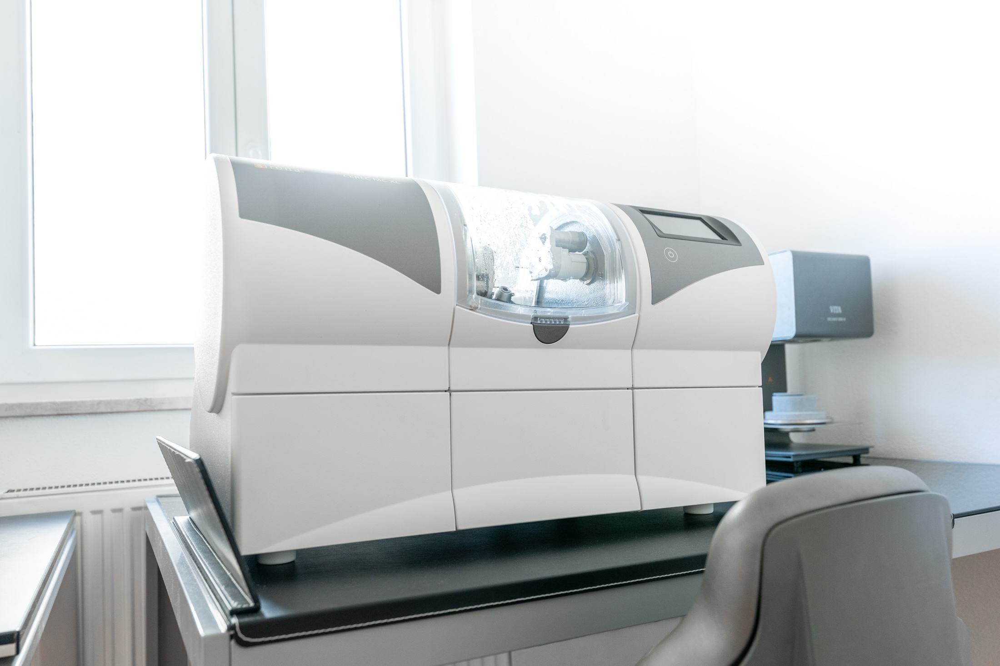
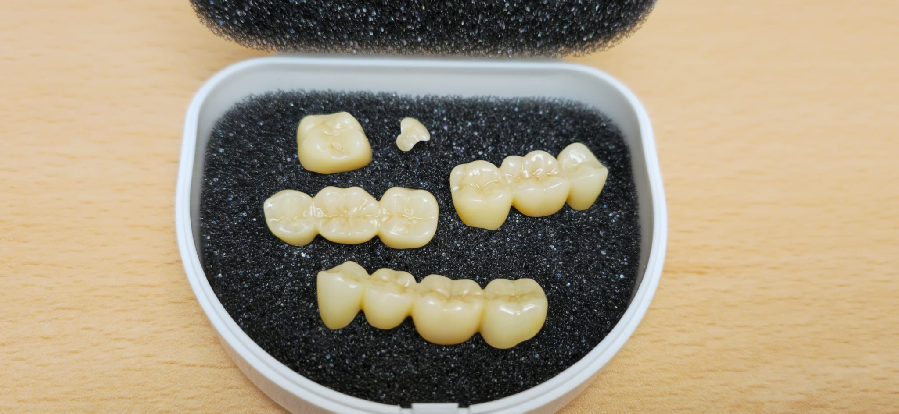

Digital Dentistry & CEREC
From scan to finished restoration — precise, digital, comfortable.

Precisely planned. Digitally made. Made for you.
With modern CAD/CAM technology, we combine digital precision with high-quality dentistry. Your teeth are captured three-dimensionally with an intraoral scanner — in many cases without a traditional impression at all.
Inlays, partial crowns, and crowns can then be digitally planned and fabricated directly in our practice. Depending on the treatment, it's even possible to complete and place your ceramic restoration in a single appointment.
Fewer appointments. More comfort. Precision down to the smallest detail.
Digital fabrication in real time
From scan to restoration
01 · Digital Scan
Instead of a traditional impression, we capture many situations with a digital intraoral scanner.
02 · Digital Planning
The three-dimensional data allow precise planning of your individual restoration.
03 · Digital Fabrication
From the digital design, the ceramic restoration can be fabricated directly.
04 · Precise Placement
Inlay, partial crown, or crown are then adjusted with control and placed.
Efficient care — sometimes on the same day
In suitable cases, our digital workflow enables particularly efficient treatment — sometimes even within a single appointment.
The right restoration for your situation

Inlay
Precisely replacing what has been lost.
An inlay is a precisely fitted insert for larger defects, where a traditional filling is no longer the ideal solution. It replaces the damaged area with precision, while preserving as much healthy tooth structure as possible.
Partial Crown
Stability exactly where it's needed.
If a tooth is more significantly weakened, a partial crown can specifically protect the vulnerable areas. Unlike a full crown, it doesn't need to cover the entire tooth — allowing more natural tooth structure to be preserved.
Crown
Protection for significantly weakened teeth.
If a tooth has already lost a lot of substance, a crown may be necessary to stabilize it long-term. It restores shape and chewing function and can be made to look very natural with modern ceramics.
Bridge
A fixed solution for missing teeth.
A bridge can permanently close a gap in your teeth. The missing tooth is replaced by an intermediate piece supported by the neighboring teeth. We'll decide together, individually, whether a bridge or an implant makes more sense.
You might also be interested in
Ready for the next step?
Schedule your appointment at EDEL SMILE in Munich Trudering.
Book Appointment